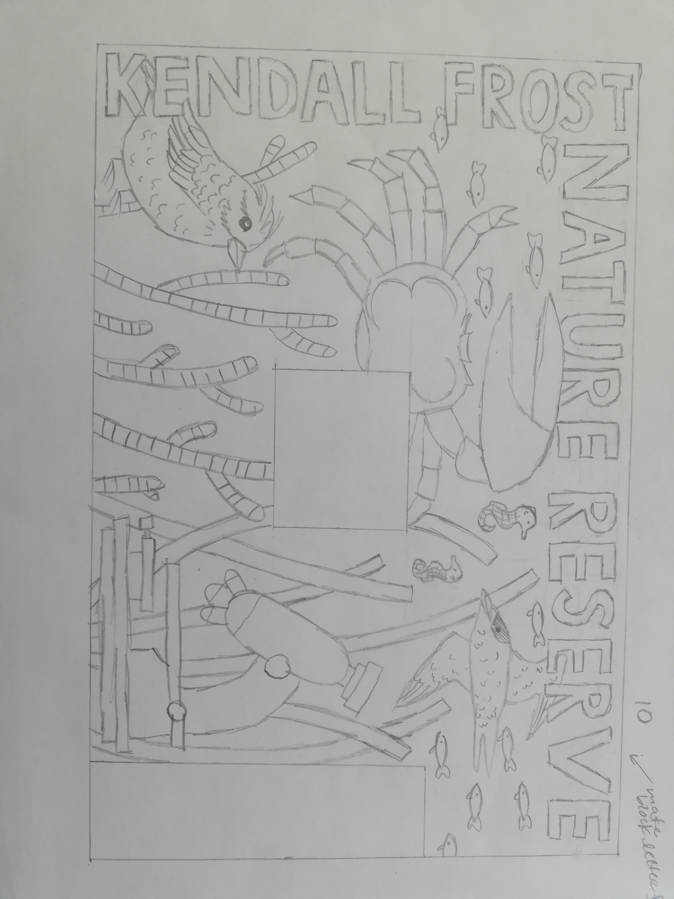
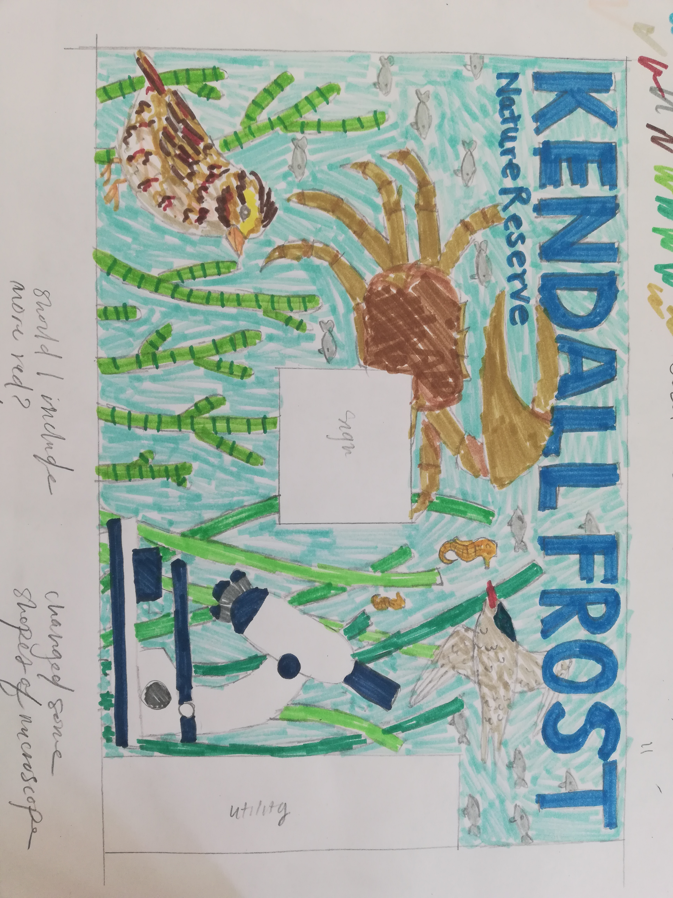
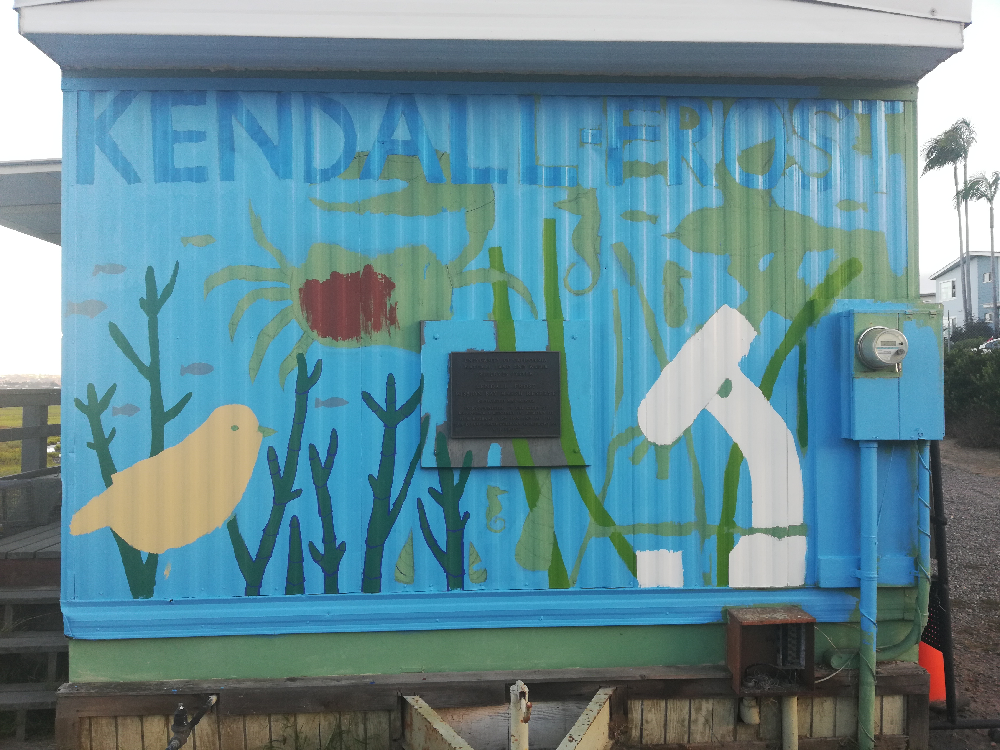

The Kendall-Frost Nature Reserve is a large coastal marsh managed by
UC San Diego. It is home to lots of wildlife and scientifc experiements.
For a long time, a bungalow was located near the marsh for research
and adminstrative purposes. To beautify the bungalow and increase
awareness about wetlands conservation, I worked with Director Isabelle
Kay to design the following mural.

This is an initial sketch done. It includes many native species
like the endangered Savannah Belding Sparrow and Fiddler Crab.
There is also a microscope to represent scienctific work that
happens in the bungalow! The blank boxes represent parts of the
space that cannot be painted with a design.

After the inital sketch was approved, I colored it for an idea
of what paints to choose.
The sketch is hand-drawn onto the building using pencil to guide the painting process.

The pencil sketch is painted in.
A last minute edit to fill in the negative space is to add various
monochrome zen-doodles onto the blue background. It ties together
the piece and adds visual interest. The final mural!